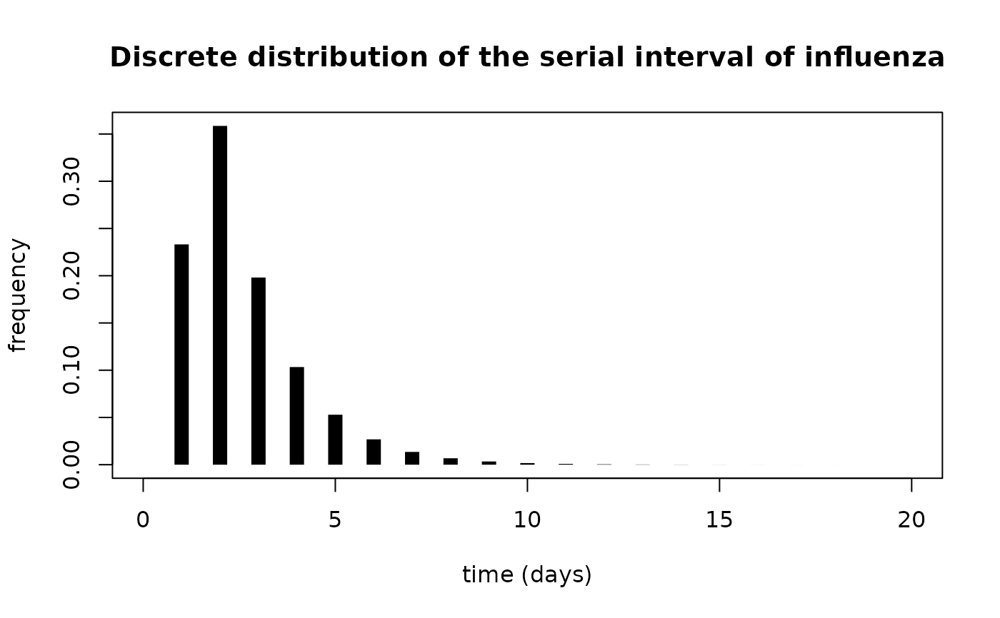

Compute the discrete distribution of the serial interval, assuming that the serial interval is a shifted Gamma distributed, with shift 1.
Details
Assuming that the serial interval is a shifted Gamma distributed with mean \(\mu\), standard deviation \(\sigma\) and shift \(1\), the discrete probability \(w_k\) that the serial interval is equal to \(k\) is (see supplement of Cori et al. AJE 2013):
$$w_k = kF_{\{\mu-1,\sigma\}}(k)+(k-2)F_{\{\mu-1,\sigma\}} (k-2)-2(k-1)F_{\{\mu-1,\sigma\}}(k-1)\\ +(\mu-1)(2F_{\{\mu-1+\frac{\sigma^2}{\mu-1}, \sigma\sqrt{1+\frac{\sigma^2}{\mu-1}}\}}(k-1)- F_{\{\mu-1+\frac{\sigma^2}{\mu-1}, \sigma\sqrt{1+\frac{\sigma^2}{\mu-1}}\}}(k-2)- F_{\{\mu-1+\frac{\sigma^2}{\mu-1}, \sigma\sqrt{1+\frac{\sigma^2}{\mu-1}}\}}(k))$$
where \(F_{\{\mu,\sigma\}}\) is the cumulative density function of a Gamma distribution with mean \(\mu\) and standard deviation \(\sigma\).
References
Cori, A. et al. A new framework and software to estimate time-varying reproduction numbers during epidemics (AJE 2013).
Examples
## Computing the discrete serial interval of influenza
mean_flu_si <- 2.6
sd_flu_si <- 1.5
dicrete_si_distr <- discr_si(seq(0, 20), mean_flu_si, sd_flu_si)
plot(seq(0, 20), dicrete_si_distr, type = "h",
lwd = 10, lend = 1, xlab = "time (days)", ylab = "frequency")
title(main = "Discrete distribution of the serial interval of influenza")
